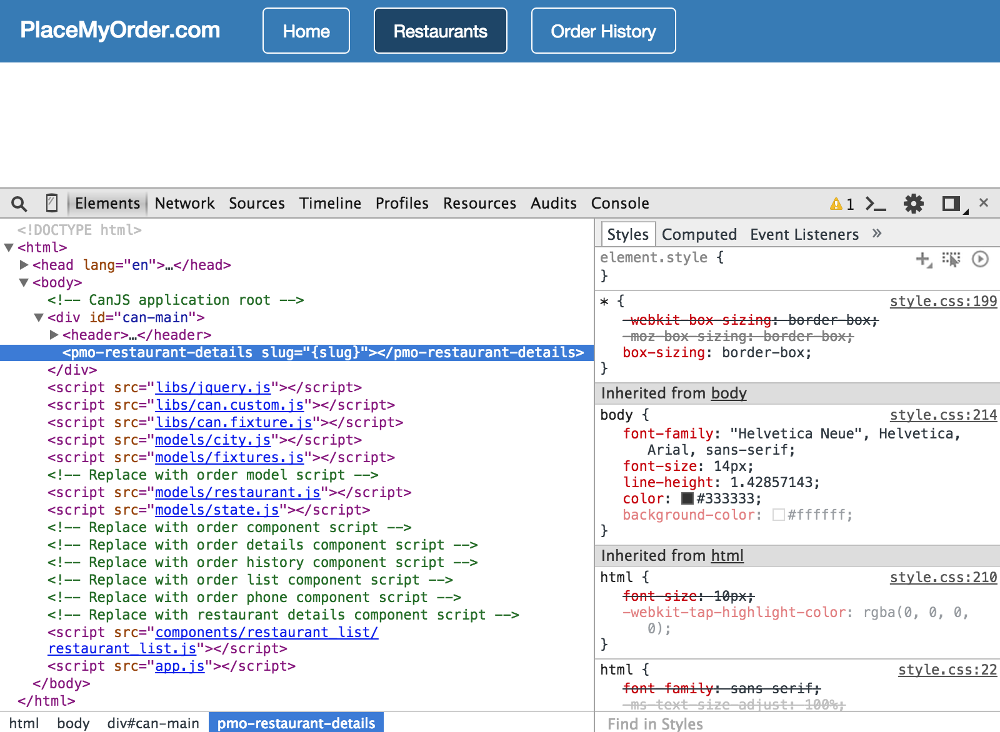
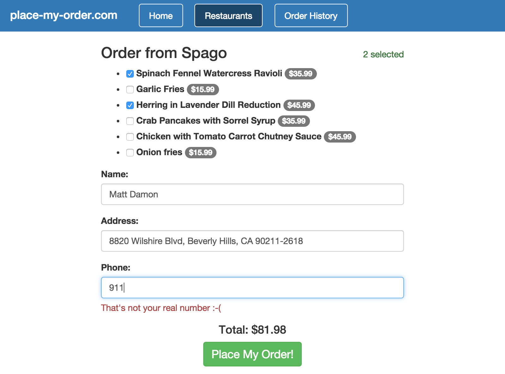
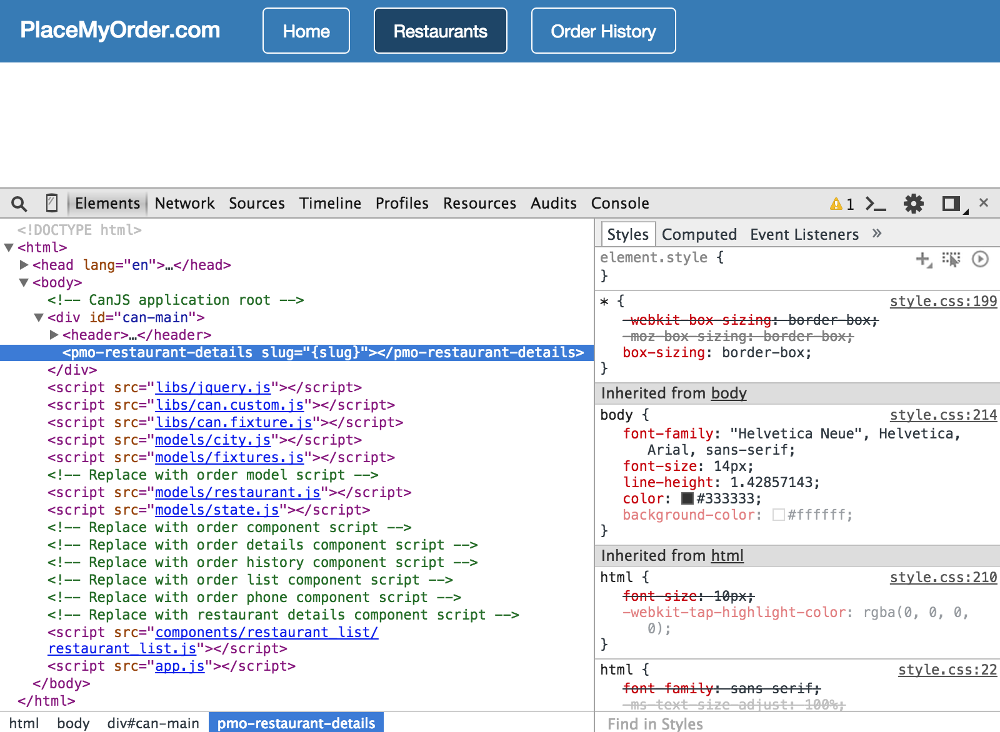
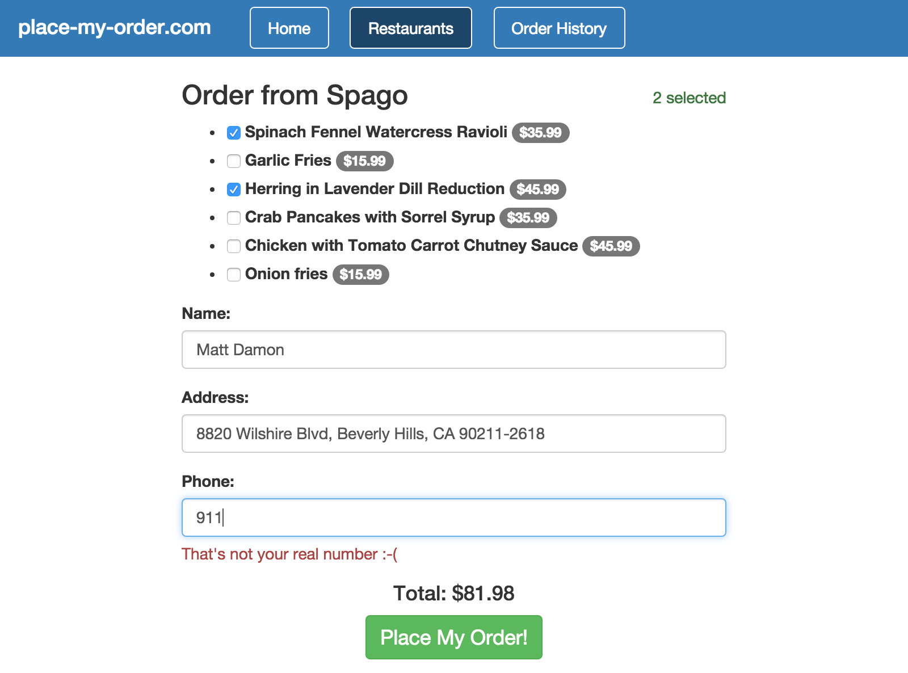

CanJS makes it easy to handle any
any standard DOM event,
such as a change event, in your component. To add an event handler, we
have to make changes in two places:
The view template
The can.Component view model
Before we can work with an example, let’s get the restaurant details page
working. When you go to the Restaurants page in your browser, then select
a state and city, then click the “Place My Order” button next to a restaurant,
the page will have a pmo-restaurant-details element without any content.

As we’ve discussed earlier, you need to include the component’s script
file to register the component with CanJS. While we’re at it, we’re going to
include the scripts for the rest of the components that we’re going to use.
Let’s edit the index.html file by replacing these lines:
<!-- Replace with order component script -->
<!-- Replace with order details component script -->
<!-- Replace with order history component script -->
<!-- Replace with order list component script -->
<!-- Replace with order phone component script -->
We have just one more file we need to include before we move on. This
section is going to introduce orders from a restaurant, and
we’ll want to have an Order model. Find this line:
<!-- Replace with order model script -->
and replace it with this line:
<script src="models/order.js"></script>
Now, if you refresh the page, you’ll see the details for Spago.
If you click the “Order from Spago” button, you’ll find yourself with a menu, a
name field, and an address field; however, we’re missing one important piece of
customer information: a phone number. Let’s build a phone-validator
component to collect this information, and add some event handling to
validate the field as the user types.
There are two ways you can add event handling to an element:
by adding an attribute with the event name prefixed by can-.
by adding an attribute with the event name surrounded in parenthesis, e.g., (click).
<!--Example using can- syntax-->
<input name="phone" type="text" can-keyup="{setPhoneValue @element.val}">
<!--Example using () syntax-->
<input name="phone" type="text" ($keyup)="setPhoneValue(@element.val)">
Of these, the preferred method is to use parenthesis to surround the event name.
Again, any standard DOM event is supported.
More information about can.stache's event and two-way binding syntaxes can be found at can.view.bindings.
In addition to defining an event, you can pass certain predefined parameters
to the method that handles the event. These parameters include:
@element - The can.$ wrapped element where the event occurred.
@event - The event object—or properties off of that object.
@viewModel - If the element is a can.Component, the component's viewModel.
@context - The current context.
You are not limited to these parameters. Any valid value can be passed in to the
handler method. Separate method parameters with a space, e.g. {{myMethod arg1 arg2}}
Let’s open the components/order_phone/order_phone.stache file and add the
following:
<div class="form-group{{#if error}} has-error{{/if}}">
<label>Phone:</label>
<input name="phone" type="text" ($keyup)="setPhoneValue(@element.val)">
{{#if error}}
{{#eq order.phone '911'}}
<p>That's not your real number :-(</p>
{{else}}
<p>Please enter a phone number in the format 555-555-5555</p>
{{/eq}}
{{/if}}
</div>
Notice the <input /> element with a ($keyup) event handler. Whenever there
is a keyup event in the input, the code in the value will be executed. We’re
also passing @element.val to the setPhoneValue helper. Let’s
add the component’s JavaScript to the components/order_phone/order_phone.js
file:
Here you can see the setPhoneValue helper function, which takes the val
passed to it by the template and sets the phone property of the
component’s order property to val.
But how do errors show up? The template is using the error property on the
component, which looks like this:
Notice that the error property uses this.attr("order").attr("phone") in
its getter. Because of CanJS’s observables, CanJS is
aware of us setting that value in our setPhoneValue helper, and thus only
runs the getter again (called “recomputing the value”) when
the value has changed. When the setPhoneValue helper sets the value, CanJS
recomputes the error property’s value, which will return an error if you
type “911” or anything that doesn’t look like a phone number.

Note that you can place as many event handlers as you need on an element. Adding event
handlers in this way directly binds the events to the element. This can impact
performance in situations where you have many elements to bind events to. For
more performant event binding, you can use the can.Component’s events
property. Discussing this is beyond
the scope of this introduction. See the API for more details.
In this Chapter
Get the code for: chapter: event handling
CanJS makes it easy to handle any any standard DOM event, such as a
changeevent, in your component. To add an event handler, we have to make changes in two places:can.Componentview modelBefore we can work with an example, let’s get the restaurant details page working. When you go to the Restaurants page in your browser, then select a state and city, then click the “Place My Order” button next to a restaurant, the page will have a
pmo-restaurant-detailselement without any content.
As we’ve discussed earlier, you need to include the component’s script file to register the component with CanJS. While we’re at it, we’re going to include the scripts for the rest of the components that we’re going to use. Let’s edit the
index.htmlfile by replacing these lines:with these lines:
We have just one more file we need to include before we move on. This section is going to introduce orders from a restaurant, and we’ll want to have an
Ordermodel. Find this line:and replace it with this line:
Now, if you refresh the page, you’ll see the details for Spago.
If you click the “Order from Spago” button, you’ll find yourself with a menu, a name field, and an address field; however, we’re missing one important piece of customer information: a phone number. Let’s build a
phone-validatorcomponent to collect this information, and add some event handling to validate the field as the user types.There are two ways you can add event handling to an element:
can-.(click).Of these, the preferred method is to use parenthesis to surround the event name. Again, any standard DOM event is supported. More information about
can.stache'sevent and two-way binding syntaxes can be found at can.view.bindings.In addition to defining an event, you can pass certain predefined parameters to the method that handles the event. These parameters include:
You are not limited to these parameters. Any valid value can be passed in to the handler method. Separate method parameters with a space, e.g.
{{myMethod arg1 arg2}}Let’s open the
components/order_phone/order_phone.stachefile and add the following:Notice the
<input />element with a($keyup)event handler. Whenever there is akeyupevent in theinput, the code in the value will be executed. We’re also passing@element.valto thesetPhoneValuehelper. Let’s add the component’s JavaScript to thecomponents/order_phone/order_phone.jsfile:Here you can see the
setPhoneValuehelper function, which takes thevalpassed to it by the template and sets thephoneproperty of the component’sorderproperty toval.But how do errors show up? The template is using the
errorproperty on the component, which looks like this:Notice that the
errorproperty usesthis.attr("order").attr("phone")in its getter. Because of CanJS’s observables, CanJS is aware of us setting that value in oursetPhoneValuehelper, and thus only runs the getter again (called “recomputing the value”) when the value has changed. When thesetPhoneValuehelper sets the value, CanJS recomputes theerrorproperty’s value, which will return an error if you type “911” or anything that doesn’t look like a phone number.
Note that you can place as many event handlers as you need on an element. Adding event handlers in this way directly binds the events to the element. This can impact performance in situations where you have many elements to bind events to. For more performant event binding, you can use the
can.Component’s events property. Discussing this is beyond the scope of this introduction. See the API for more details.‹ Loading States Web Service Communication ›